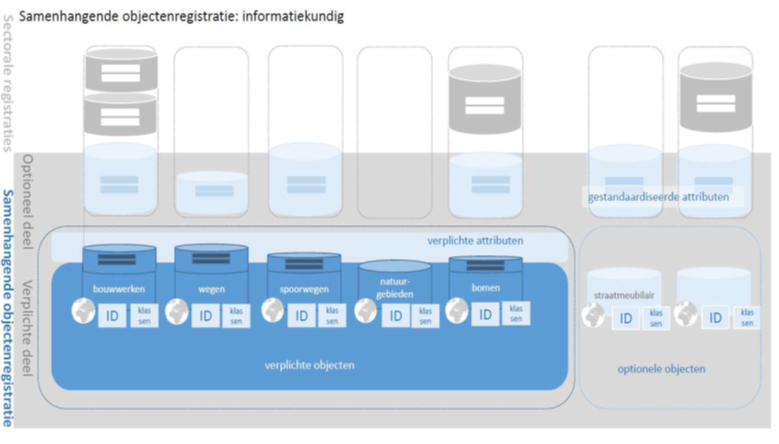
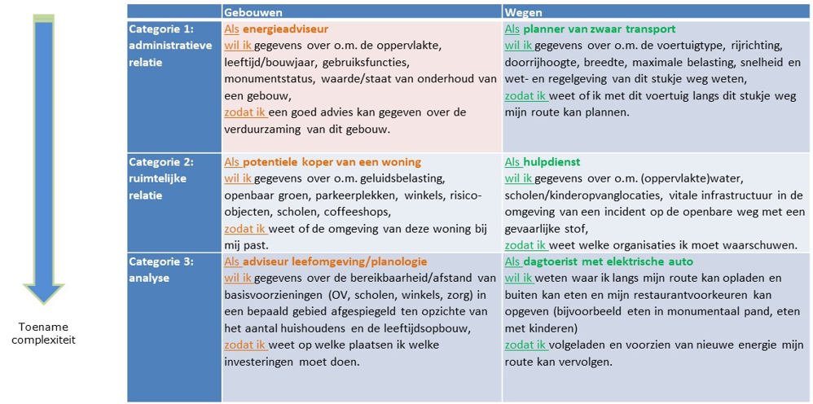
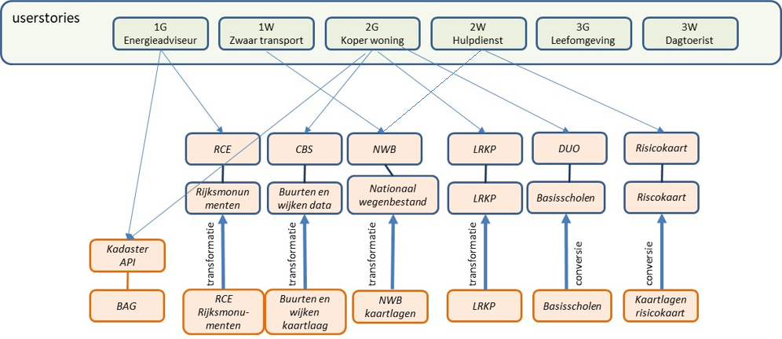
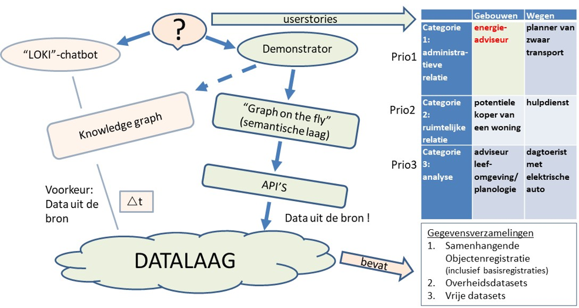

Creative Commons Attribution 4.0 International Public License (CC-BY)
Samenvatting
Dit document beschrijft de inzichten die verkregen zijn tijdens het ontwikkelen van een demonstrator in het kader van het traject Doorontwikkeling in Samenhang (DiS Geo). Het ministerie van BZK beoogt met dit traject meer samenhang te krijgen in het stelsel van geo(basis)registraties waarbij de focus ligt op semantische harmonisatie van registraties en informatiemodellen, en alternatieve methoden van gegevensuitwisseling en bijhouding (meer centraal, minder kopiëren). Het doel van deze demonstrator was om te beproeven en aan een breed publiek te laten zien hoe geodata in samenhang kan worden gepubliceerd op het web.
Status van dit document
Deze paragraaf beschrijft de status van dit document ten tijde van publicatie. Het is mogelijk dat er actuelere versies van dit document bestaan. Een lijst van Geonovum publicaties en de laatste gepubliceerde versie van dit document zijn te vinden op https://www.geonovum.nl/geo-standaarden/alle-standaarden.
Dit is de definitieve versie van dit document. Wijzigingen naar aanleiding van consultaties zijn doorgevoerd.
Dit is de definitieve versie van het Lessons Learned document dat naar aanleiding van de eerste fase van de DisGeo demonstrator is gepubliceerd. Het is geen officieel geconsulteerde standaard maar een verslag dat door de betrokkenen bij de demo gezamenlijk is geschreven. Deze personen zijn allemaal genoemd als redacteur danwel auteur van dit document.
1. Inleiding
1.1 Doel van de demonstrator
Het ministerie van BZK beoogt met het traject Doorontwikkeling in Samenhang (DiS Geo) meer samenhang te krijgen in het stelsel van geo(basis)registraties waarbij de focus ligt op semantische harmonisatie van registraties en informatiemodellen, en alternatieve methoden van gegevensuitwisseling en bijhouding (meer centraal, minder kopiëren).

Gebruikers denken immers meestal niet in datasets, maar in data die op allerlei manieren verbanden met elkaar heeft en te combineren is. In het NEN3610 stelsel en het stelsel van basisregistraties is tot nu toe wél gedacht in datasets. Informatiemodellen zijn in zekere zin silo’s die alleen de semantiek van een bepaalde sector standaardiseren, maar niet in samenhang met de informatie van andere sectoren zijn gemodelleerd. Deze samenhang is er in werkelijkheid echter wel. Linked data is een uitermate geschikte techniek om deze semantische samenhang vast te leggen zodat de data zelf ook geïntegreerd kan worden.
Als de semantiek (voldoende) in samenhang is gebracht, is de volgende stap om de data in samenhang te publiceren, op een manier die voor breed gebruik geschikt is. Vindbaar via zoekmachines, bruikbaar voor data gebruikers – de intermediairs: web/app developers, data scientists, data journalisten etc. Voor eindgebruikers kan de data in een geschikte, toegankelijke web viewer worden gepubliceerd.
Geonovum voert verschillende activiteiten uit in het kader van de doorontwikkeling van de geo(basis)registraties die vooral gericht zijn op de semantische harmonisatie. Een daarvan is het ontwikkelen van een demonstrator op het gebied van onderlinge semantische verbinding van gegevens en semantiek in geo(basis)registraties middels Linked Data voor de thema’s Gebouwen en Wegen. De ontwikkeling vindt plaats in een github repository.
Het doel van deze demonstrator is om te beproeven en aan een breed publiek te laten zien hoe geodata in samenhang kan worden gepubliceerd op het web. De demonstrator laat zien hoe extra informatie kan worden geknoopt aan algemene basisobjecten, door gebruik te maken van semantische samenhang. Hierdoor kan informatie slim gekoppeld worden – door vast te leggen dat de informatie bijvoorbeeld over hetzelfde gebouw gaat, ongeacht of de informatieobjecten dezelfde geometrie hebben.
1.2 Doel van dit document
Tijdens het ontwikkelen van de demonstrator is er veel ervaring opgedaan met data uit basisregistraties en andere overheidsregistraties, met APIs en andere web services, met semantiek en onderlinge verwijzingen tussen datasets. Voordat het stelsel van overheidsregistraties in samenhang kan worden gebruikt en bevraagd, moeten er nog heel wat stappen gezet worden.
De ontwikkeling van de demonstrator heeft waardevolle inzichten opgeleverd over vraagstukken rondom techniek, semantiek en governance, die zijn samengevat in dit Lessons Learned document. Hoofdstuk 2 vat de belangrijkste inzichten samen. Hoofdstuk 3 beschrijft de opzet van het onderzoek waarin de demonstrator ontwikkeld is. Hoofdstuk 4 tenslotte geeft het volledige overzicht van de geleerde lessen.
2. Samenvatting
2.1 APIs zijn de nieuwe silo’s…
APIs (en dan bedoelen we in dit document meer specifiek de huidige REST APIs, zoals gedefinieerd in de [NLAPIStrategie]) zijn bedoeld voor het stellen van veelgestelde vragen of het doen van veelgevraagde acties op data. Ze zijn daarmee per definitie gelimiteerd in datamodel en functionaliteit. Dit is in veel gevallen handig, want de API is erop toegespitst om veel voorkomende vragen snel en eenvoudig af te handelen.
Maar...
Wat als je geen veelgestelde vraag hebt, maar een minder vaak voorkomende?
Wat als de data in het antwoord niet dat ene gegeven bevat dat je nodig hebt?
Wat als de data geen geo-vragen ondersteunt, terwijl je wilt weten welke andere objecten bij een object in de buurt liggen?
De data in APIs heeft veelal geen links naar data in andere APIs. Elke API is in feite een silo, die zich beperkt tot het beantwoorden van vragen over een enkele dataset.
2.2 Silo’s in samenhang?
Hoe stel je samenhangende vragen over deze veelheid aan silo-APIs heen?
Het is, zoals de ontwikkelde demonstrator laat zien, mogelijk over meerdere APIs een semantische laag te bouwen, maar deze vergt specifieke code per API en onderhoud voor elke keer dat een API wijzigt.
We kunnen verwachten dat de hoeveelheid APIs erg groot wordt. Er is bovendien sprake van toenemende complexiteit per toegevoegde API (geen 2 APIs zijn hetzelfde).
2.2.1 Semantische laag
De semantische laag moet het geheel aan kennis bevatten dat je wilt bevragen. Wie een bredere vraag wil stellen, moet eerst een stukje aan de semantische laag toevoegen.
“Het geheel aan kennis” bestaat in dit geval uit
Basisregistraties
Andere overheidsdatasets
Vrije datasets
Dus … een open wereld. Het geheel aan kennis beschrijven is niet mogelijk! De semantische orchestratielaag moet daarmee uitbreidbaar zijn.
De semantische laag beschrijft hoe de data in het stelsel zich tot elkaar verhoudt. Deze beschrijving bevat zowel de betekenis van de data en de samenhang ervan, als de kennis over welke data in welke API zit en hoe je die API aanspreekt.
De stelselcatalogus zou hier in theorie voor gebruikt kunnen worden, mits deze wordt geïntegreerd met de daadwerkelijke definities van semantische modellen zoals die van de BAG, die als linked data beschikbaar is.
2.3 Samenhang op dataniveau
De data in APIs heeft veelal geen links naar data in andere APIs. Dit is een probleem van de onderliggende data: de verwijzingen tussen individuele objecten, uit verschillende datasets, ontbreken nog.
Om het stelsel (via APIs) in samenhang te kunnen bevragen, is het nodig dat
Er verwijzingen tussen datasets worden aangelegd,
APIs ook identifiers kunnen teruggeven van eraan gekoppelde basisregistraties.
Bijvoorbeeld: aan een NHR API vragen stellen op basis van een BAG Verblijfsobject identifier.
Er moeten dus verwijzingen, links, gelegd worden op data instantie niveau - van het ene object naar het andere, waarbij de objecten in verschillende registraties zitten.
Deze links kunnen het beste worden uitgedrukt in de vorm van URIs, conform een landelijke afspraak zoals de URI strategie [NLURIStrategie]; op basis van identifiers uit de basisregistraties.
Oók in APIs moeten links op een uniforme manier worden uitgedrukt. Een afspraak hiervoor kan worden opgenomen in de API strategie voor de Nederlandse Overheid [NLAPIStrategie].
2.4 Eigenaarschap van data
Hoe kun je aan een API / de data uit een API zien van wie de data afkomstig is?
Door het ontbreken van een semantische laag [JSON-LD] op de meeste API's is het na het ophalen van data niet duidelijk wat de data betekent en wie er eigenaar van is. Bij vragen die beantwoord worden door het samenvoegen van resultaten van verschillende APIs, is het in het antwoord niet te herleiden wie de eigenaar is van welk deel van het antwoord.
2.5 Governance op het snijvlak
Eerder schreven we al dat er technische afspraken gemaakt moeten worden voor het leggen van verwijzingen oftewel links op data instantie niveau, van het ene object naar het andere, óók tussen objecten uit verschillende registraties.
Los van de techniek speelt hier ook een essentiele organisatorische vraag:
"Wie is verantwoordelijk voor het toevoegen en beheren van de links tussen datasets?"
Deze links zijn basisvoorwaarde voor samenhang. Maar deze verantwoordelijkheid voor het aanleggen en beheren ervan wordt nu nog niet gevoeld en de links zijn veelal nog niet aangebracht. Dit is direct te herleiden aan de opdracht die de verschillende data eigenaren hebben, zelfs binnen organisaties. Er is bijvoorbeeld geen formele link tussen percelen en panden, aangezien de betreffende afdelingen binnen het Kadaster het onderhouden van deze link niet als opdracht hebben, en derhalve geen tijd en budget beschikbaar hebben om dit te verwezenlijken. Het beheer van deze links moet dus met beleid, en derhalve budget, ondersteund worden. Hoewel er al een plicht is om bij gebruik van gegevens uit de basisregistraties de juistheid van die gegevens te waarborgen wordt hier niet op toegezien.
Een belangrijk element van deze governance is dat er goed nagedacht moet worden op welk niveau het bijhouden van deze links gelegd wordt. Het verdient de aanbeveling dat dit zo dicht mogelijk bij de data eigenaar komt te liggen. Laat bijvoorbeeld gemeentes zorg dragen voor de juiste link tussen nieuwe panden en percelen. Hoewel de uiteindelijk data door het kadaster gepubliceerd wordt is het onderhoud dan dicht bij de oorsprong van de links uitgevoerd.
Naast het daadwerkelijk aanbrengen van de links is ook de semantische duiding van deze link een belangrijk onderwerp dat behandeld moet worden. De huidige modellering van gegevens binnen de eigen silo zorgt voor een bepaalde vrijheid bij het modelleren. Wanneer echter verwezen wordt naar gegevens uit andere registraties is ook goverance over de betekenis van deze verwijzing noodzakelijk.
Het ontbreekt op dit moment aan een uniforme wijze om externe data te laten verwijzen naar een object in basisregistraties. Als er bij het publiceren van een dataset bijvoorbeeld gerefereerd moet worden aan een BAG pand is er geen aanwijzing hoe deze link genoemd moet worden. Dit resulteert er in dat het bij de externe dataset nu moeilijk is om direct te begrijpen naar welke dataset ze verwijzen.
Mogelijke oplossing hiervoor is een gestandaardiseerde naam voor de verwijzing, bijvoorbeeld gerelateerdBAGPand.
2.6 Het 5-Sterren model voor Open Data
Een stappenplan om een aantal van bovengenoemde problemen aan te pakken is het 5 sterren Open Data model, waarbij er aan elke toevoeging van kenmerken aan de gepubliceerde data een waardering wordt toegekend.
Beschikbaar op het web, met een open licentie
Data is machine leesbaar en bevat een open licentie
De dataset is beschikbaar in een open bestandsformaat
Bovenstaande + gebruik open standaarden van het W3C [JSON-LD] om objecten in de data te identificeren, zodat anderen naar die objecten kunnen verwijzen.
Bovenstaande + link je data aan data van anderen, dit creëert samenhang tussen data sets.
Dit in beschouwing nemend zijn de huidige API's niet meer dan 3 sterren data - de data is beschikbaar op het web met een open licnetie, is machineleesbaar en is beschikbaar in een open formaat. De enige Nederlandse open overheids(geo)data die vier sterren heeft is Kadaster Linked Data via PDOK. Vijf sterren geodata is er nog niet!
2.7 Conclusies en aanbevelingen
Het uitgangspunt van het onderzoek was om een demonstrator te bouwen bovenop APIs. Maar daar blijken wel wat haken en ogen aan te zitten.
2.7.1 API versus knowledge graph
De meerderheid van open geodata wordt beschikbaar gesteld als kaartlaag, die zich niet als API laat gebruiken. Er was maar één API die goed genoeg scoorde op de maturiteitschecklist om bruikbaar te zijn. De rest van de data die in de demonstrator is gebruikt is tijdens het project in een eigen API gepubliceerd.
Aanbeveling: Vervang op de Lijst Open Standaarden de Nederlandse profielen van WMS 1.3 en WFS 2.0 door de nieuwe OGC API standaarden. WFS 2.0 kan al vervangen worden door OGC API - Features. Deze nieuwe OGC API standaarden zorgen voor een goede score op maturiteit.
Aanbeveling: Voeg een checklist API maturiteit toe aan de [NLAPIStrategie] en zorg dat APIs hier zoveel mogelijk aan voldoen.
Een geheel van losstaande APIs kan geschikt gemaakt worden voor samenhangende bevraging over de APIs heen door er een semantische orchestratielaag bovenop te implementeren. Dit is gemakkelijker als we een set goed op maturiteit scorende APIs zouden hebben. Deze semantische orchestratielaag vergt echter veel extra code en onderhoud. Beter zou het zijn om een infrastructuur te hebben van een of meerdere “knowledge graphs” waarin de data in samenhang beschikbaar en bevraagbaar is. De samenhang is dan geregeld in de datalaag. APIs kunnen daarbovenop fungeren als eenvoudige toegang tot de data. Voor de geavanceerdere toepassingen en vragen waarbij de samenhang essentieel is, kan de knowledge graph direct benaderd worden via SPARQL.
Aanbeveling: Zorg dat APIs gaan voldoen aan de maturiteitscheck. Zet daarnaast niet vol in op APIs alleen. Werk, om de doelstellingen van DisGeo te realiseren, toe naar een infrastructuur van een of meerdere “knowledge graphs” (linked data).
2.7.2 Samenhang tussen objecten
Datasets zijn in de huidige praktijk meestal niet gekoppeld. Bijvoorbeeld bevatten veel registraties, in plaats van een BAG identifier, nog velden waar adressen als tekst zijn opgenomen. Deze adressen matchen niet 100% met de BAG.
Om de objectenregistraties in samenhang te kunnen bevragen, is het een basisvoorwaarde dat de datasets op het niveau van individuele objecten aan elkaar gekoppeld zijn met behulp van identifiers. Bij voorkeur zijn deze opgenomen in de vorm van URIs.
Aanbeveling: Regel de governance voor het eenmalig leggen en vervolgens beheren van deze links - dit kost tijd en geld.
Aanbeveling: Regel de governance over de semantiek van de verbindingen.
Aanbeveling: Leg afspraken over het vormen en beheren van URIs vast in een landelijke URI strategie of bredere linked data strategie, gebaseerd op de [NLURIStrategie] die hier al een aanzet voor biedt.
Aanbeveling: Laat APIs verplicht verwijzen naar identifiers uit de samenhangende objectenregistratie als die relaties er zijn. Laat in Linked Data in die gevallen de URIs uit de samenhangende objectenregistratie opnemen.
2.7.3 Best Practices voor Data Publicatie
Er is in internationaal verband, veelal ondersteund vanuit de EU, al een hoop werk verricht rond het opstellen en documenteren van Best Practices voor data publicatie [DWBP] [SDW-BP], de maturiteitstabel in hoofdstuk 4 is hier op gebaseerd. Ook de [NLAPIStrategie] refereert hier nadrukkelijk aan. Het gebruik van deze Best Practices scheelt een hoop werk bij het opstellen van nieuwe standaarden en afspraken.
Aanbeveling: Neem de beschikbare Best Practices over in relevante documenten.
Aanbeveling: Neem in een stelsel van samen hangende registraties 5 Sterren Open Data als uitgangspunt. Het ontbreken van de 5e ster impliceert automatisch het ontbreken van samenhang.
3. Onderzoek
3.1 Globale architectuur
Bij het uitvoeren van het onderzoek rond de demonstrator is in de eerste plaats een denkkader gedefinieerd waarlangs de uitwerking van de demonstrator is aangepakt.
Daarbij zijn een aantal principes benoemd:
De applicatielaag staat volledig los van de databronnen.
De data wordt altijd via een API benaderd. Indien een databron niet via een API wordt ontsloten, wordt in de demo-omgeving een kopie van de databron aangemaakt die wel een API heeft.
Een databron heeft idealiter een API met een semantische laag (JSON-LD). Als dat niet het geval is, wordt dat niet persé in de demo-omgeving opgelost, maar als ‘lesson learned’ genoteerd
Als er vragen over API’s heen worden gesteld dan wordt er waar nodig in een orchestratielaag een voorziening gerealiseerd waarmee deze vragen kunnen worden bediend.
Bij het beantwoorden van een user story wordt minimaal één object uit de basisregistraties gebruikt.
3.2 User Stories
Er zijn een aantal user stories gedefinieerd gericht op de thema’s Gebouwen en Wegen. Deze user stories zijn in drie categorieën onderverdeeld met een toename in complexiteit:
Administratieve relatie – Gegevens opvragen over een specifiek object over een aantal gegevensverzamelingen heen.
Ruimtelijke relatie – Gegevens opvragen over objecten in de omgeving van een specifiek object.
Analyse – Gegevens opvragen op basis van meedere variabelen.
In onderstaand schema zijn de userstories beschreven. In het onderzoek van de demonstrator zijn deze opgepakt en zijn de mogelijkheden van de huidige technologieën onderzocht.

3.3 Demonstrator
De demonstrator maakt gebruik van de stelselcatalogus basisregistraties. Hierin staan de relaties beschreven tussen de verschillende objecten binnen de basisregistraties. De demonstrator vindt op basis van skos:related gerelateerde objecten.
Datasets die niet beschreven worden in de stelselcatalogus, worden toegevoegd aan een zogenaamde extensie. Deze extensie bevat de data die niet in de stelselcatalogus zit, maar volgt wel dezelfde structuur.
Welke objecten uit de stelselcatalogus door welke API geleverd worden, is beschreven in een configuratie bestand. In de configuratie is daarnaast beschreven hoe de resultaten van een API omgezet moeten worden naar [JSON-LD], een semantisch rijk formaat. Hiervoor wordt CARML gebruikt, ontwikkeld mede door het kadaster.
In de demonstrator zijn webservices voor gebouwen (Verblijfsobjecten) en wegen toegevoegd. Als ingang in het proces wordt de URI voor het type meegegeven zoals deze in de stelselcatalogus staat (dat wil zeggen, de semantische definitie). Hierop worden de relaties gevolgd naar andere objecten en op basis van de configuratie kan zo van API naar API gezocht worden.
Geografisch zoeken gaat op een net iets andere maar vergelijkbare manier. Bij geografisch zoeken, wordt op de geselecteerde locatie of op basis van de locatie van een object een circkel gemaakt met een straal van 500 meter. Op basis van geografische relaties in de extensie op de stelselcatalogus wordt bepaald welke objecten geografisch gerelateerd mogen worden. Dit wordt op basis van geof:relate gedaan, een [geosparql] property. Dit voorkomt dat alle objecten binnen deze straal gezocht worden. Uiteindelijk zou dit de demonstrator onbruikbaar maken. De gevonden objecten worden omgezet naar linked data en gekoppeld aan het startobject met een geof:nearby relatie.
3.4 Databronnen
Voor de user stories zijn een aantal databronnen gebruikt die in onderstaande plaat zijn weergegeven:

3.5 Samenwerking Kadaster met betrekking tot Knowledge Graph
In het kader van dit onderzoek is er ook samengewerkt met het Kadaster. Het Kadaster is innoverend bezig en onderzoekt nieuwe technologieën om gegevens uit de gegevensverzamelingen van het Kadaster te bevragen. Een van die technologieën is het ontwikkelen van een knowledge graph, die onder andere bevraagd kan worden door middel van een chatbot. Het Kadaster heeft voor de user story 'energieadviseur' een knowledge graph ontwikkeld.

4. Lessons learned uit de DisGeo linked data demonstrator
Dit hoofdstuk beschrijft de geleerde lessen uit het onderzoek. Terwijl de demonstrator werd ontwikkeld, hebben we de problemen waar we tegenaan liepen geregistreerd als issues in github. De lessen staan in dit hoofdstuk één voor één opgesomd zoals we ze zijn tegengekomen. Lees voor de samenvatting en conclusies hoofdstuk 2.
4.1 API beschikbaarheid, API bruikbaarheid en API compleetheid
4.1.1 Beschikbaarheid
Aanvankelijk was de gedachte bij de start van het project, dat een ruime beschikbaarheid van APIs zou zorgen voor een brede beschikbaarheid van data. Het juist combineren van deze data zou een schat aan informatie opleveren.
Echter, uit de praktijk blijkt dat APIs (nog) niet ruim beschikbaar zijn. De BAG beschikt over een goed opgezette API die zowel relationele als geografische data biedt. De BAG API onderscheidt zich daar dan ook mee.
4.1.2 Bruikbaarheid
Meer dan 80% van de gebruikte data wordt beschikbaar gesteld als kaartlaag (i.e. WMS(T) of WFS oude stijl, danwel een niet-gestandaardiseerde variant hiervan), die zich niet als API laat gebruiken. Daarbij is de BAG API de enige API die zich geografisch laat bevragen.
4.1.3 Compleetheid
Daarnaast stelt een API niet per definitie alle data beschikbaar. De BAG API stelt bijvoorbeeld het gebruiksdoel van een verblijfsobject niet beschikbaar via de API.
4.1.4 Maturiteit
Veel APIs scoren niet goed op (al) deze punten:
4.1.4.1 Checklist API Maturiteit
#
Vraag
Verwijzing API Strategie
Verwijzing (Spatial) Data on the Web Best Practices
Op de huidige pas-toe-of-leg-uit-lijst van Forum Standaardisatie staan nu de Nederlandse profielen van WMS 1.3 en WFS 2.0. Deze ‘verplichting’ staat een andere doorontwikkeling in de weg. De oplossing ligt in het vervangen van deze standaarden op de Lijst Open Standaarden door de nieuwe OGC API standaarden. WFS 2.0 kan al vervangen worden door OGC API - Features. Deze nieuwe OGC API standaarden zorgen voor een goede score op maturiteit.
De checklist voor API-maturiteit zou een goede toevoeging zijn aan de Nederlandse API strategie [NLAPIStrategie].
4.2 APIs en datasilo's
Op basis van een API bevraging komt bepaalde data terug. In een stelsel van data, die men in samenhang wil kunnen gebruiken, is het nodig dat de data verwijzingen naar andere objecten doet op basis van een uniek en persistent id. Op basis van dit principe kunnen we een generieke oplossing bedenken.
Eén constatering ten aanzien van APIs lijkt te zijn dat, in ieder geval in de APIs die wij hebben onderzocht, een API gezien kan worden als data silo. De API deelt de data uit één silo en bevat veelal geen enkele relaties naar data (of een dataset) buiten de API.
Gebruikelijk lijkt te zijn, dat als een API meerdere requests aanbiedt, het antwoord van de ene request verwijst naar een andere request binnen diezelfde API. Zo verwijst de data over een verblijfsobject naar de request binnen dezelfde API om bijbehorende pand data op te vragen.
Dit is aan de ene kant handig, maar mocht je aan de hand van de verkregen BAG Pand id een andere registratie willen gaan bevragen, om meer informatie over dat pand op te halen, dan moet je als programmeur het id uit de API URL 'knippen', waarvoor kennis van de specifieke URL opbouw van deze API vereist is. Het is niet mogelijk om op generieke wijze een id uit een URL te knippen.
Om het stelsel, via APIs, in samenhang te kunnen bevragen, moet een API bovendien ook vragen kunnen beantwoorden op basis van identifiers uit andere, eraan gerelateerde datasets.
4.2.1 Onderliggend probleem: ontbrekende verbindingen in de data
Een API kan natuurlijk niet méér aanbieden dan de databron die hij ontsluit. Als in de brondata geen verbindingen, links, zijn aangebracht tussen objecten uit deze dataset en objecten uit andere datasets, dan kan de API zulke verbindingen ook niet bieden.
Het onderliggende probleem is dus dat de datasets deze links niet structureel vastleggen en beheren. Als datasets dit wel zouden doen, zouden de daarbovenop aanwezige APIs kunnen worden verbeterd om links tussen individuele objecten wel te gaan aanbieden en bevraagbaar te maken op een bruikbare manier.
4.2.2 Overwegingen voor vervolg of voor opname in API-strategie
Om data uit de datasilo in samenhang beschikbaar te maken, zou er verwezen moeten worden naar identifiers. Hierdoor kan er generiek omgegaan worden met het ophalen van data van verschillende APIs.
Daarnaast zouden APIs moeten verwijzen naar identifiers van objecten uit andere APIs. Zo beschrijft de data van de Rijksdienst voor Cultureel Erfgoed (RCE) adressen op monumenten, maar deze zijn letterlijk ingevoerd in plaats van gekoppeld aan de BAG en laten zich daardoor lastig vergelijken. Dit brengt grove foutmarges met zich mee. Idealiter zou de RCE API (ook) verwijzen naar een adres identifier beschikbaar binnen de BAG.
Om het stelsel en aanpalende gegevensverzamelingen in samenhang te kunnen bevragen moeten APIs verwijzen naar identifiers uit de samenhangende objectenregistratie als die relaties er zijn. Dit is overigens een probleem dat zijn oorsprong vindt in de onderliggende data, de API is slechts een ontsluiting hiervan.
Het moet ook duidelijk zijn wat de betekenis is van die relatie. Soms wordt bijvoorbeeld aan een object een adres gerelateerd voor de vindbaarheid terwijl in dat object meerdere verblijfsobjecten met adressen kunnen voorkomen. Hieruit mag niet worden geconcludeerd dat alleen dat ene adres relevant is.
Voor het organiseren (leggen en beheren) van die relaties is governance en budget nodig!
4.3 Eén en tweezijdige verwijzingen en afwijkingen
Datamodellen leggen beperkingen op. Zo legt bijvoorbeeld het BAG datamodel vast dat een verblijfsobject naar een pand verwijst, maar een pand niet naar een verblijfsobject. Echter de API doet dit wel en wijkt daarmee af van het datamodel. Dit maakt het gebruik van een API erg specifiek.
4.3.1 Overwegingen voor vervolg
Een relatie tussen twee objecten moet altijd in twee richtingen uitvraagbaar zijn.
Het semantisch model moet zo robuust zijn dat een eventuele orchestratielaag over APIs heen zo compact mogelijk wordt gehouden.
4.4 Structuur van het API resultaat
Een API kan resultaten teruggeven in een structuur die anders is als de resultaten anders zijn. Een concreet voorbeeld hiervan is, dat als het resultaat één instantie bevat deze direct wordt teruggegeven in de resultaten, terwijl een resultaat met meerdere instanties door dezelfde API wordt gebundeld in bijvoorbeeld een JSON array. Dit zorgt voor een andere structuur.
Normaliter is dit niet persé een probleem, maar bij het bouwen van de demonstrator was dit wel problematisch. De resultaten van een API worden omgezet naar een semantisch formaat. Dit wordt gedaan door middel van een mapping. Hoe de instanties gebundeld worden, i.e. hoe het resultaat van een API gestructureerd is, moet in de mapping verwerkt worden, anders kan deze niet goed uitgevoerd worden. ALs deze structuur kan verschillen betekent dit een uitgebreidere mapping.
4.4.1 Overweging voor vervolg of voor opname in API-strategie
Er kan overwogen worden om in de API-strategie op te nemen dat een antwoord dat één of meer resultaten kan bevatten altijd een bundeling is, ook in het geval dat een specifieke vraag maar één resultaat oplevert. Hiermee wordt de semantische orchestratielaag klein en compact gehouden.
4.5 Adresgegevens onvergelijkbaar
Adresgegevens zijn in theorie een veelbelovend gegeven om objecten aan elkaar te relateren, maar dit blijkt in de praktijk vaak lastig. In de verschillende datasets die in de demonstrator zijn gebruikt worden vaak adresgegevens gebruikt, echter laten deze zich moeilijk vergelijken. Aannemende dat het Kadaster het meest complexe model op adresgegevens hanteert (de BAG) lijkt dit ook de meest nauwkeurige en daardoor meest bruikbare. Een adres bestaat uit een aantal facetten (woonplaats, straat, huisnummer, huisletter, toevoeging). Echter een groot deel van de datasets/APIs hanteren deze gegevens door elkaar. Hierdoor is het lastig om adresdata te vergelijken.
4.5.1 _Overweging voor vervolg
Om het stelsel en aanpalende gegevensverzamelingen in samenhang te kunnen bevragen moeten objecten in datasets verwijzen naar identifiers uit de samenhangende objectenregistratie als die relaties er zijn. Relaties op basis van beschrijvende elementen zoals een ingetypt adres moeten worden uitgesloten.
4.6 Stelselcatalogus geen relatie met bron
Om de semantische relatie tussen de data van de verschillende APIs te ontdekken, moet in de semantische orchestratielaag gedefinieerd worden hoe data zich tot elkaar verhoudt. Dit wordt prima gedaan door de al bestaande stelselcatalogus.
Een deel van de data uit basisregistraties is ook al beschikbaar als semantische data bij de bron, i.e. Linked Data, inclusief een semantisch model. Echter is er geen relatie tussen de elementen van het semantisch model bij de bron en de equivalente elementen in de stelselcatalogus. Hierdoor is het onmogelijk om de al bestaande stelselcatalogus te gebruiken als basis voor de orchestratielaag en hiermee de reeds beschikbare semantische data op te vragen en aan de demonstrator toe te voegen. Als deze semantische 'brug' tussen de stelselcatalogus en al gepubliceerde semantische data er al was geweest, had dit het bouwen van de demonstrator aanzienlijk kunnen vereenvoudigen.
4.6.1 Overweging voor vervolg
De semantische relaties van de samenhangende objectenregistratie (opvolger van de stelselcatalogus, in ieder geval voor de geo-basisregistraties) moeten altijd gerelateerd zijn aan het semantische model van de datasets. Dit is een relatief eenvoudig te zetten stap die helpt om de orchestratielaag compact en beheersbaar te houden.
4.7 Wat als data van meerdere bronnen komt?
Tijdens het ontwikkelen van de DisGeo demonstrator is de aanname gedaan dat data over één object geleverd wordt door één enkele API. Data omtrent een verblijfsobject zal altijd van het kadaster komen. Op het moment data deze aanname ongeldig wordt, treedt het probleem op dat het haast onmogelijk is om te achterhalen waar een bepaald object opgevraagd moet worden.
4.7.1 Overweging voor vervolg
Basisgegevens moeten enkel en alleen bij de samenhangende objectenregistratie worden opgehaald. Dit blijft een uitgangspunt!
4.8 Herkomst van data
Een API biedt in geen van de gevallen metadata over het object. Het is daardoor onmogelijk om de herkomst, actualiteit, nauwkeurigheid en betrouwbaarheid van data te valideren.
4.8.1 Overwegingen voor vervolg of voor opname in API-strategie
Onderzocht moet worden of APIs hiervoor geschikt te maken zijn.
Linked data biedt hiervoor goed de mogelijkheid.
4.9 Configuratielast
Om de APIs aan elkaar te kunnen relateren, de resultaten van een API om te zetten in een semantisch formaat en om de API configuratie te beschrijven is een enorme configuratielast onontkoombaar. Voor de beperkte APIs op dit moment is er al ruim 4000 regels aan configuratie nodig. Ook het onderhoud van deze configuratie zal een redelijke last met zich mee brengen.
We kunnen verwachten dat de hoeveelheid APIs erg groot wordt. Bovendien is er sprake van toenemende complexiteit per toegevoegde API (geen twee APIs zijn hetzelfde).
Een ander nadeel is dat een semantische laag die je op deze manier bouwt, eigen interpretatie bevat: de semantiek van de data in de API zelf is vaak immers niet bekend, want niet gepubliceerd.
De semantische laag moet het geheel aan kennis bevatten dat je wilt bevragen. Deze laag beschrijft hoe de data in het stelsel zich tot elkaar verhoudt; hieraan wordt gekoppeld welke data in welke API zit. Wie een bredere vraag wil stellen dan de semantische laag afdekt, moet eerst een stukje aan de semantische laag toevoegen.
“het geheel aan kennis” bestaat in dit geval uit
Basisregistraties
Andere overheidsdatasets
Vrije datasets
Dus … een open wereld. Het geheel aan kennis beschrijven is niet mogelijk! De semantische orchestratielaag moet daarmee uitbreidbaar zijn.
4.9.1 Overwegingen voor vervolg
Dit pleit er extra voor de orchestratielaag zo compact mogelijk te houden.
De orchestratielaag moet uitbreidbaar zijn.
Linked data maakt het hebben van een orchestratielaag grotendeels of geheel overbodig. Op termijn hiernaartoe groeien
4.10 Geografische vraag kenmerkt zich door missende relatie (en waar naar te zoeken)
Bij vragen met een geografische component gaat de demonstrator op zoek naar objecten die geen administratieve relatie hebben tot elkaar: deze objecten moet binnen een bepaalde straal van elkaar liggen. Dit zou mogelijk zijn op alle objecten die gedefinieerd zijn in de Stelselcatalogus, waarvan de gedefinieerde API geografische zoekvragen ondersteunt.
Bij een groeiend aantal APIs zou dit echter een flinke belasting op de performance betekenen. Het opvragen van bijvoorbeeld alle panden binnen een bepaalde straal levert bovendien in potentie ontzettend veel data op, die in veel gevallen waarschijnlijk niet de vraag van de gebruiker zal beantwoorden. Op dit moment is gekozen om in de configuratie vast te leggen op welke objecten geografisch gezocht moeten worden vanuit een bepaald start object. Hierdoor kan er sturing plaats vinden.
4.10.1 Overwegingen voor vervolg
Nader onderzoek is nodig naar wat de balans is tussen op alles te kunnen zoeken en het aantal resultaten hanteerbaar te houden.
Oplossingsrichtingen zijn bijvoorbeeld het inbouwen van gerichte zoekpatronen, filters of andere manieren om het aantal zoekrichtingen te kanaliseren.
4.11 Geografische relatie obv GeoSPARQl
Geografische data laten zich makkelijk in samenhang gebruiken. Geografische data worden in het kader van deze demonstrator in alle gevallen aangeboden in een geo-standaard. Hierdoor kunnen verschillende tools en softwarebibliotheken eenvoudig omgaan met geografische data. Ook tools die semantisch werken kunnen goed met deze data omgaan doordat semantische (i.e. op Linked Data gebaseerde) geostandaarden zoals GeoSPARQL [geosparql] zijn toegepast.
GeoSPARQL is een OGC standaard die een extensie beschrijft van SPARQL[rdf-sparql-query], de standaard querytaal voor Linked Data. GeoSPARQL definieert ook een basisvocabulaire voor geodata en kan worden gebruikt om aan te duiden dat een object een geo-object is en om topologische relaties tussen geo-objecten te leggen.
4.11.1 Overweging voor vervolg
Dat geografische data worden aangeboden in een geo-standaard is waardevol, op deze weg blijven doorgaan.
Gebruik GeoSPARQL bij het aanbieden van geografische data als linked data.
Om de (geo)basisregistraties in samenhang te laten functioneren, is het nodig om door te groeien naar Linked Data. Het groeipad hiernaartoe moet worden uitgestippeld.